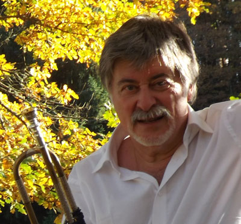

ALAIN FAUCHER
Faut-il croire au destin ?
En 1958, comme pour tout enfant de mon époque, la règle est d’écouter les conseils et les désirs de ses parents. Mon père, mélomane et musicien contrarié, veut m’inscrire à l’Ecole de Musique de Brétigny sur Orge. Peut-être à la Clarinette ou au Hautbois ? Le choix de l’instrument ne m’appartient pas...
Lors des inscriptions, je me retrouve à attendre, dans le hall de l’école. Traversant celui-ci, un monsieur à la mine réjouie et à l’air bienveillant, me demande de quel instrument je veux jouer ?
«- Mon papa veut que je fasse de la clarinette ou du hautbois… »
« - Non, pas ton papa, TOI … ».
« - De la Trompette… mais mon papa … »
« - Viens, je connais ton papa, je lui expliquerai … »
Et c’est ainsi que quelques minutes plus tard, que je me retrouve, allongé sur une table, avec une feuille de papier sur le ventre, à observer mon souffle, ce que je n’ai jamais cessé de faire depuis lors.

Rétrospectivement je tremble à l’idée d' avoir pu ne pas rencontrer ce grand homme, Robert PICHAUREAU.
Pendant quarante ans, j’ai bénéficié avec bonheurs de son enseignement, bâti sur les ressentis corporels.
Durant vingt ans, j’ai
eu l’honneur et la chance de jouer à ses côtés.
Je me considère comme sa ‘’production’’, bien qu’il ait répété mille fois, avec raison, que j’en étais le seul responsable grâce à mon travail personnel. Son rôle, selon lui consistant seulement à me montrer le chemin, fût, je l’affirme aujourd’hui, déterminant.
Il m’a façonné tel un maître artisan compagnon. Il fut mon guide dans ma quête et dans mon souci d’évolution. Il était toujours présent pour me montrer la direction, pour m’éviter de me perdre. M’ayant vu grandir il me connaissait par cœur.
Très tôt, il me mit en posture de tutorat auprès de mes petits camarades. Peut-être sentait-il, déjà, une possible aventure pédagogique naissante en moi. Il renforça cette vocation débutante en me proposant rapidement de l’accompagner lors de ses
conférences, puis d’en partager leur contenu. Des moments, inoubliables de connivence, enrichissaient le trajet et ces journées. Sur les parcours de retour, les échanges, plus intimes sur l’appréciation de la vie, m’ont nourri. J’ai ainsi eu le
privilège d’accéder à son histoire personnelle.
J’ai passé beaucoup de temps à reconnaître, puis à fixer Mes sensations. Je poursuis toujours et encore, cette culture du ressenti, car il est nécessaire de chercher en permanence, afin de maintenir une progression… et je vous l’assure, la progression
n’a pas de fin !
Le chemin est infini ! Il est une philosophie de construction de la vie.
Personnellement, j’ai eu l’énorme chance de ne recevoir que sa seule éducation. Il m’a constamment mis en posture de recherche. Je peux
affirmer aujourd’hui que je me suis construit à ses côtés.
En 1999, très affecté, j’ai ressenti un énorme vide lors de sa disparition. Celle-ci représentait la cassure du cordon qui me rassurait. : Le Père était parti.
Mais assez
vite, j’ai pris conscience qu’il m’avait donné tous les outils nécessaires. Je pouvais désormais progresser en étant maître et responsable de moi-même.
J’ai compris également qu’il m’avait mis sur le chemin du partage, concept au combien
enrichissant car il alimente l’expérience. En réalité je le sens toujours présent avec moi.
Mon métier de pédagogue, je l’ai également façonné et consolidé en grande partie au sein de l’Education Nationale.
Héritier de son enseignement,
je me devais donc de pérenniser l’œuvre entreprise. Maurice ANDRE, Maître incontesté de la trompette, lors d’une rencontre, m’encourageait à poursuivre « l’œuvre de Robert » disait-il.
Robert PICHAUREAU est né en 1918. A son époque les parents exigeaient de chacun des enfants d’avoir un « vrai métier » avant la musique. Robert, lui, était peintre d’intérieur. Le conservatoire de Tours accueille ses débuts de trompettiste, dans la classe de Marcel PAPEIX. Puis en 1936, il entre au Conservatoire National Supérieur de Paris en tant qu’auditeur et travaille avec Eugène FOVEAU. Il entre à la Musique de l’Air ou Il assure la partie de bugle. En parallèle, animant des bals, il pratique également le violon, instrument qui remplace sa trompette dans les tangos.
Il considère ses débuts comme difficiles. Il « souffrait » pour jouer de son instrument : « J’étais sur la gueule ! ». Le plaisir était donc très relatif. La découverte et l’écoute des trompettistes de jazz Américains accompagnant le débarquement allié
en 1944, le décidèrent à remettre à plat sa démarche de trompettiste. Fasciné par leur façon aisée de s’envoler vers des tessitures qu’il ne pensait jamais atteindre, et par leur apparente facilité de jeu, il a entamé sa remise en question.
Il changea l’angle de son approche instrumentale. Son point de départ fut l’observation de son corps : principalement de sa respiration et dans le même temps, ‘’l’oubli de l’instrument’’.
Sa pédagogie, évolutive envers lui-même, lui permit peu à peu une réalisation sonore plus aisée, sur une étendue plus vaste de la tessiture de la trompette. Je dis bien pédagogie évolutive car les mots et les explications de ses débuts
se sont affinés, se sont précisés. Il supprima certaines préconisations sujettes à caution. J’ai pu en bénéficier avec un grand bonheur.
Sa carrière d’enseignant, Robert PICHAUREAU l’a exercée, chez lui Villa Violet, à Vanves, au Lilas,
à Brétigny-sur-Orge où il a dirigé l’Ecole de Musique. Après sa retraite, au début des années 90, il s’est installé définitivement à Gratens, au sud de Toulouse.
Monsieur PICHAUREAU a continué à recevoir les musiciens en difficulté jusqu’à
sa disparition en février 1999.
La vie est faite de rencontres. Je mesure aujourd’hui l’immense chance et le bonheur d’avoir partagé quarante années auprès de ce grand Monsieur.
Je tente de prolonger cela avec vous.